2025年北京西城区初中学业水平考试地理试卷 原卷解析
2025年北京市初中学业水平考试（西城试卷）
地理
注意事项：1．本试卷共13页，共两部分，共23题，满分60分。考试时间60分钟。
2．在试卷和草稿纸上准确填写姓名、教育ID号、考场号和座位号。
3．试题答案一律填涂或书写在答题卡上，在试卷上作答无效。
4．在答题卡上，选择题用2B铅笔作答，其他试题用黑色字迹签字笔作答。
5．考试结束，将本试卷、答题卡和草稿纸一并交回。
第一部分
为了更好地认识地球，老师组织同学们制作简易地球仪。下图是小明同学找到的制作材料。据此完成下面小题。
1. 小明同学制作简易地球仪的合理步骤是（ ）
①以乒乓球为“地球”，在合适位置打两个小孔代表“极点”
②将支架底座平放于桌面，调整“地轴”，使其倾斜于底座
③用铁丝做成地球仪支架，将“地球”稳定安置于架上
④用细竹签作为“地轴”，穿过“地球”的南北“极点”
A. ①-②-③-④B. ①-③-②-④C. ①-④-③-②D. ②-①-③-④
2. 小明同学尝试用自制的简易地球仪演示地球自转运动，正确的操作是（ ）
A. 倾斜放置地球仪，自东向西拨转球体
B. 手持地球仪，平移地球仪
C. 平放地球仪，自西向东匀速拨转球体
D. 手持地球仪，翻转地球仪
3. 小明和同学们将简易地球仪放在暗室内，一位同学持手电筒从侧面照射地球仪，一位同学演示地球自转。他们模拟演示的地理现象是（ ）
A. 昼夜交替B. 四季变化C. 气候变化D. 海陆变迁
【答案】1. C 2. C 3. A
【解析】
【1题详解】
制作简易地球仪的合理步骤是先以乒乓球为“地球”，在合适位置打两个小孔代表“极点”，然后用细竹签作为“地轴”，穿过“地球”的南北“极点”，接着用铁丝做成地球仪支架，将“地球”稳定安置于架上，最后将支架底座平放于桌面，调整“地轴”，使其倾斜于底座，即①-④-③-②。
【2题详解】
地球自转方向为自西向东，不能自东向西拨转球体，A错误。
平移地球仪、翻转地球仪都不能演示地球自转运动，BD错误。
演示地球自转时，应将地球仪平放于桌面，保持地轴倾斜，自西向东匀速拨转球体，C正确。
【3题详解】
用手电筒照射地球仪，被照亮的一半为白昼，未被照亮的一半为黑夜，拨转地球仪演示自转，可以观察到昼夜交替现象，A说法符合题意。
四季变化是地球公转产生的地理现象，B说法不符合题意。
气候变化受多种因素影响，海陆变迁是地壳运动等引起的，该实验无法模拟，CD说法不符合题意。
“骑遇运河”滨水环线是北京市通州区的一条探寻大运河（北运河）的热门骑游线路。下图为一位网友发布的某日打卡地图和骑行照片。读图，完成下面小题。
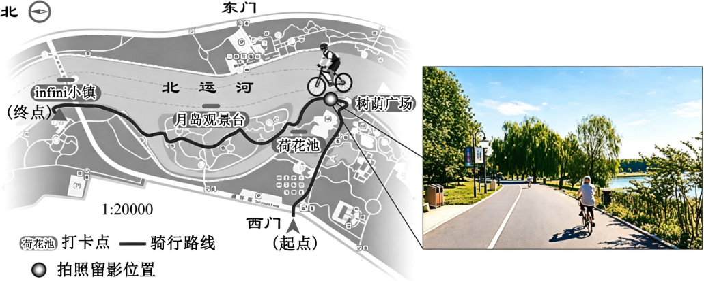
4. 该网友的骑行路线在图上的长度约12厘米，则该网友实际骑行距离约为（ ）
A. 35千米B. 2.4千米C. 24000米D. 20000厘米
5. 根据该网友发布的骑行照片可推断（ ）
①当时正向西骑行 ②当时正向北骑行
③当天天气状况： ④当时风力状况：
A. ①③B. ①④C. ②③D. ②④
【答案】4. B 5. C
【解析】
【4题详解】
图中的比例尺是：图上1厘米，代表实地距离0.2千米，该网友的骑行路线在图上的长度约12厘米，则两地的实地距离是2.4千米，即是2400米、240000厘米，B正确，ACD错误。
【5题详解】
根据地图上的指向标，箭头指向左侧为北，则上方为东，下方为西，右侧为南。在拍照位置，骑行者正向左侧骑行，即向北骑行，①错误。
结合指向标和骑行路线，拍照时骑行者正向北骑行，②正确。
照片中阳光明媚，地面有清晰的影子，说明天气晴朗，图示天气符号为晴，③正确。
照片中树枝自然下垂，水面平静，说明风力较小；而图示风力符号带有三条长划线，表示6级风，风力较大，与实际不符，④错误。
中医药是中华文明的瑰宝。明代李时珍编撰的《本草纲目》记载了我国1800多种中草药，下图示意了其中四种著名中草药主要产地。读图，完成下面小题。
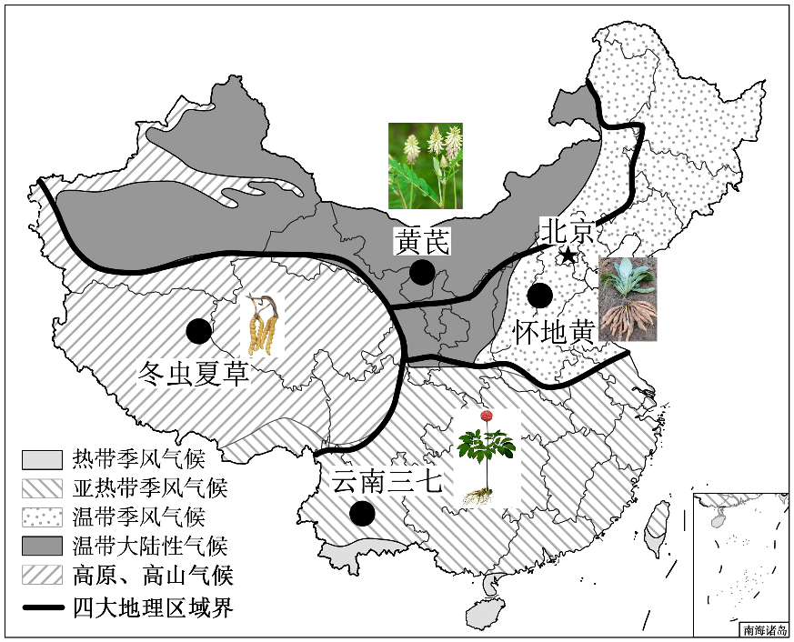
6. 我国中草药种类丰富，其气候原因是我国（ ）
A. 有寒带、温带、热带B. 气候类型复杂而多样
C. 温带大陆性气候为主D. 热带季风气候分布广
7. 四种中草药主产地与所属区域及其自然特征对应正确的一组是（ ）
A. 黄芪：西北地区——地势第一级阶梯
B. 三七：北方地区——水资源丰沛
C. 冬虫夏草：青藏地区——高寒的环境
D. 怀地黄：南方地区——黑土肥沃
【答案】6. B 7. C
【解析】
【6题详解】
我国大部分位于北温带，南部部分地区位于热带，没有寒带，A错误。
气候类型复杂多样，使得世界上大多数农作物和动植物都能在我国找到适合生长的地区，因此中草药种类丰富，B正确。
温带大陆性气候分布广，但这不是中草药种类丰富的原因，C错误。
热带季风气候分布面积较小，D错误。
【7题详解】
黄芪主要分布在西北地区，西北地区主要位于我国地势第二级阶梯，A错误。
三七主要分布在云南省，属于南方地区，B错误。
冬虫夏草主要分布在青藏地区，青藏地区海拔高，其显著的自然特征是高寒，C正确。
怀地黄主要分布在北方地区，但黑土主要分布在东北平原，怀地黄产地主要在华北平原，D错误。
2025年1月1日，我国开始渐进式延迟法定退休年龄。下图是2019年—2023年全国人口出生率、死亡率和自然增长率变化图。据此完成下面小题。
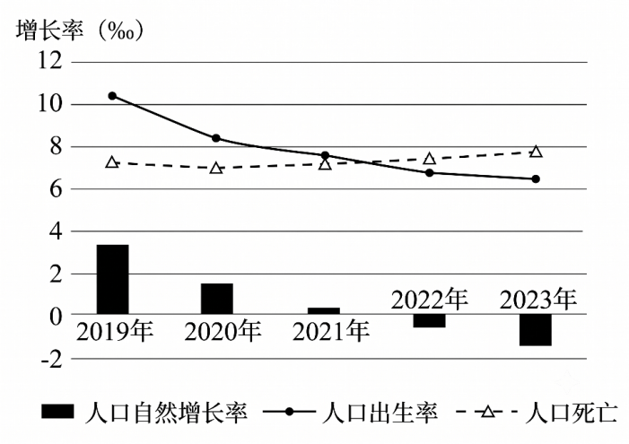
8. 2019年—2023年我国人口（ ）
A. 出生率逐渐下降B. 总数量逐年增加C. 死亡率明显下降D. 自然增长率稳定
9. 延迟退休政策的实施，可能带来的积极影响是（ ）
A. 改变人口年龄结构B. 缓解劳动力不足
C. 延长人口预期寿命D. 将消耗更多资源
【答案】8. A 9. B
【解析】
【8题详解】
2019年—2023年我国人口出生率曲线呈下降趋势，A正确。
2022年和2023年人口自然增长率为负值，说明人口总数量出现下降，并非逐年增加，B错误。
人口死亡率曲线略有上升，并非明显下降，C错误。
人口自然增长率由正转负，变化明显，并不稳定，D错误。
【9题详解】
人口年龄结构主要受出生率、死亡率等因素影响，延迟退休政策不能改变人口年龄结构，A错误。
随着人口老龄化加剧，劳动力短缺问题逐渐显现，延迟退休政策可以增加劳动力供给，缓解劳动力不足的问题，B正确。
人口预期寿命主要受医疗卫生条件、生活水平等因素影响，延迟退休不能延长人口预期寿命，C错误。
将消耗更多资源不属于积极影响，D错误。
粤港澳大湾区是继美国纽约湾区、旧金山湾区和日本东京湾区后成型的世界第四个大湾区。至2023年底，粤港澳大湾区已成功登顶全球湾区经济规模榜首。下图是世界四大湾区位置示意图及其面积、人口和经济指标对比气泡图。读图文资料，完成下面小题。
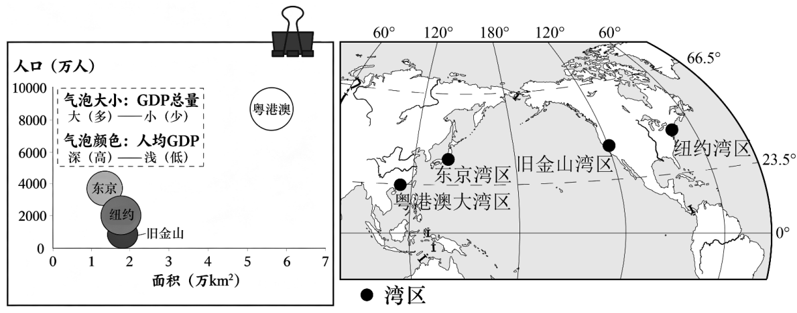
10. 世界四大湾区均位于（ ）
①东半球②北半球③中低纬度④亚欧大陆⑤太平洋沿岸
A. ①④B. ②③C. ②④D. ③⑤
11. 与世界其他三大湾区相比，粤港澳大湾区发展的优势条件是（ ）
①面积最大，发展空间广阔②湾区发展时间长
③GDP总量多，经济规模大④人口多，人均GDP高
A. ①③B. ①④C. ②③D. ②④
【答案】10. B 11. A
【解析】
【10题详解】
旧金山湾区和纽约湾区位于西半球，①不符合题意。
四大湾区均位于赤道以北，属于北半球，②符合题意。
均位于0°~60°之间，属于中低纬度，③符合题意。
旧金山湾区和纽约湾区位于北美大陆，④不符合题意。
纽约湾区位于大西洋沿岸，⑤不符合题意。
【11题详解】
粤港澳大湾区面积最大，发展空间广阔，①符合题意。
材料指出粤港澳大湾区是继其他三大湾区后成型的第四个大湾区，发展时间较短，②不符合题意。
气泡最大，代表GDP总量多，经济规模大，③符合题意。
气泡颜色最浅，代表人均GDP最低，④不符合题意。
第23届国际足联世界杯将由北美洲的美国、加拿大、墨西哥三国于2026年夏季联合举办，这是世界杯历史上首次由三个国家共同主办。下图为北美洲地形图、本届世界杯主办国及部分举办城市相关资料。据此完成下面小题。
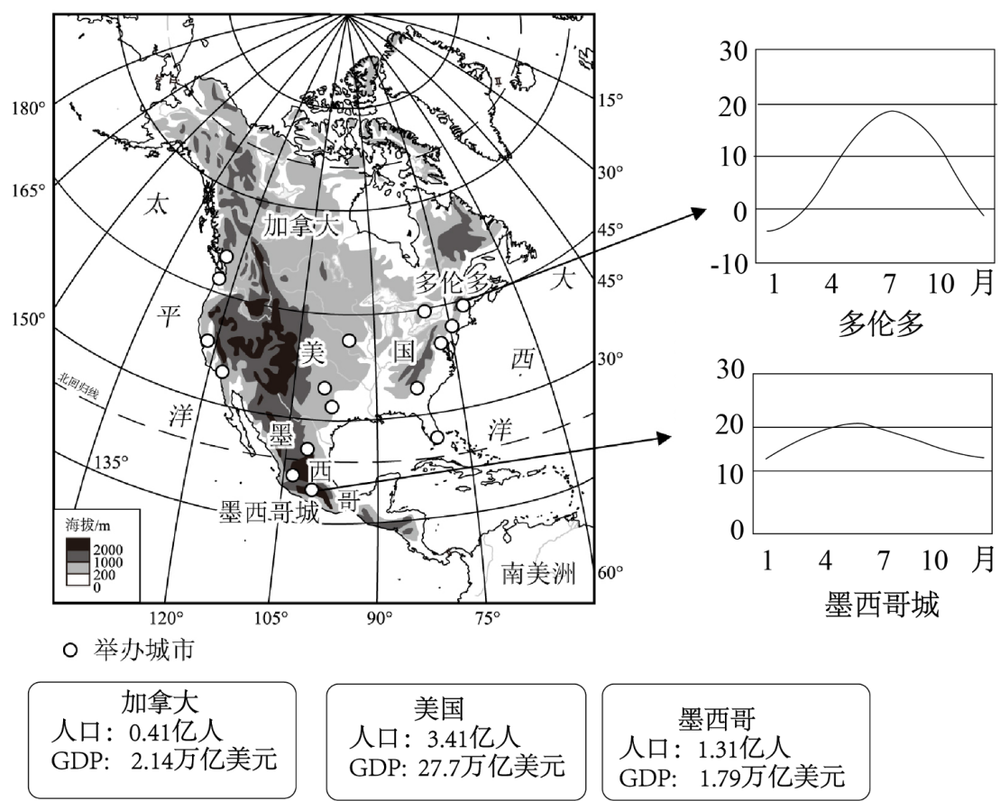
12. 北美洲（ ）
A. 西北隔白令海峡与欧洲相望B. 总体地势南部和北部高，中部低
C. 西部的高大山脉呈纵列分布D. 密西西比河自南向北入五大湖区
13. 美国、加拿大、墨西哥三国联合举办国际足联世界杯的优势条件是（ ）
A. 美国与另两国接壤，便于联系B. 均为发达国家，GDP水平相当
C. 皆为拉丁语系国家，文化相同D. 皆为世界人口大国，地狭人稠
14. 多伦多和墨西哥城地理位置差异显著，但夏季凉爽，均适合体育赛事，主要原因是（ ）
①多伦多纬度较高②多伦多距海较近
③墨西哥城纬度低④墨西哥城海拔高
A. ①③B. ①④C. ②③D. ②④
【答案】12. C 13. A 14. B
【解析】
【12题详解】
北美洲西北隔白令海峡与亚洲相望，A错误；
地形分为三大南北纵列带，总体地势东西高，中部低，B错误；
西部的高大山脉（科迪勒拉山系）呈南北纵列分布，C正确；
密西西比河自北向南注入墨西哥湾，D错误。
【13题详解】
美国本土北接加拿大，南接墨西哥，与另两国接壤，地理位置相邻，便于联系，A正确；
墨西哥属于发展中国家，且由图可知三国GDP水平差距较大，B错误；
美国和加拿大主要通行英语，墨西哥主要通行西班牙语，文化差异较大，C错误；
加拿大和美国面积广大，人口密度小，属于地广人稀的国家，D错误。
【14题详解】
多伦多纬度较高，接收到的太阳辐射较少，夏季凉爽，①正确；
多伦多夏季凉爽的主要原因是纬度较高，与距海远近关系较小，②错误；
墨西哥城纬度较低，按纬度规律气温应较高，这不是其夏季凉爽的原因，③错误；
墨西哥城地处墨西哥高原，海拔较高，气温随海拔升高而降低，因此夏季凉爽，④正确。
2024年11月19日，印度尼西亚通过法案，拟将首都由雅加达迁至努山塔拉。雅加达位于爪哇岛，是东南亚人口密度最大的城市，交通拥堵、环境问题严重，地震、海啸等灾害频发。努山塔拉位于加里曼丹岛，岛上热带雨林面积广大，有多个土著部族居住。下图为雅加达和努山塔拉位置示意图。读图，完成下面小题。
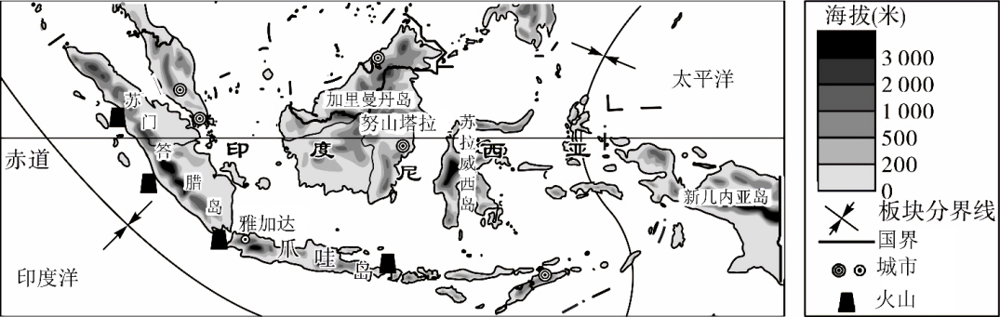
15. 加里曼丹岛人口稀少的主要自然原因是（ ）
A. 气候湿热，雨林广布B. 比爪哇岛面积小，资源贫乏
C. 海拔较高，气温较低D. 在板块交界线上，灾害频发
16. 迁都努山塔拉承载着印尼对未来发展的愿景。这一举措旨在（ ）
①疏解雅加达人口，缓解交通、环境压力②更靠近马六甲海峡，利于发展航运贸易
③促进印尼的各部族、各区域间协同发展④彻底避免地震、海啸等自然灾害的危害
A. ①②B. ①③C. ②③D. ②④
【答案】15. A 16. B
【解析】
【15题详解】
加里曼丹岛被赤道穿过，属于热带雨林气候，气候湿热，雨林广布，不适宜人类大规模居住，A正确；
面积远大于爪哇岛，且自然资源丰富，B错误；
位于赤道附近，气温较高，C错误；
读图可知，加里曼丹岛位于板块内部，不在板块交界线上，地质灾害相对较少，D错误。
【16题详解】
雅加达人口密度大，交通拥堵、环境问题严重，迁都可以疏解雅加达人口，缓解交通、环境压力，①正确；
读图可知，雅加达比努山塔拉更靠近马六甲海峡，②错误；
努山塔拉位于加里曼丹岛，有多个土著部族居住，迁都可以带动该地区经济发展，促进印尼各部族、各区域间协同发展，③正确；
迁都可以在一定程度上减轻地震、海啸等自然灾害的影响，但不能彻底避免自然灾害的危害，④错误。
南极地区分布着四个极具科考价值的地点，分别是“极点”、“磁点”、“冰点”、“高点”。我国的昆仑站建在“高点”上。下图为南极四“点”示意图。读图文资料，完成下面小题。
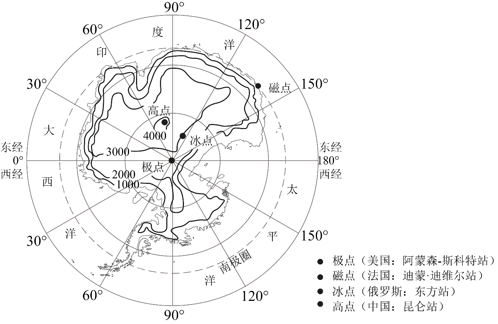
17. 关于“高点”的说法，正确的是（ ）
A. 位于西经80°附近B. 地处“磁点”的正南方
C. 比“极点”纬度高D. 高于“冰点”1000米以上
18. 冰架是大陆冰川向海洋延伸的部分。近年来科考工作者多次观测到南极边缘冰架发生大面积崩塌，下列结构图示意了该现象的成因。图中序号代表内容正确的是（ ）
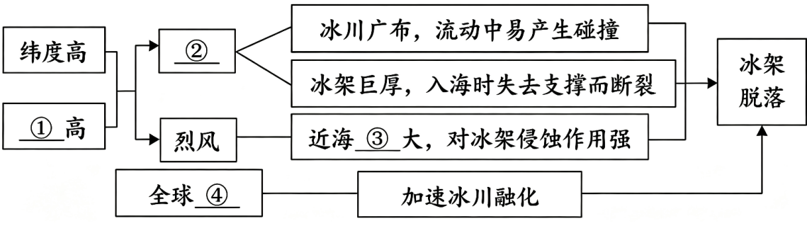
A. ①——风浪B. ②——酷寒C. ③——海拔D. ④——变冷
【答案】17. D 18. B
【解析】
【17题详解】
南极上空俯视地球自转方向为顺时针（自西向东），0°经线顺时针方向为东经，高点位于东经80°附近，A错误。
磁点和高点不在同一条经线上，高点位于磁点的西南方向，B错误。
极点为南极点，纬度为90°S，是世界上纬度最高的地方，高点纬度比极点低，C错误。
图中的等高距为1000米，高点海拔在4000米以上，冰点海拔在2000~3000米之间，高点高于冰点1000米以上，D正确。
【18题详解】
南极地区纬度高、海拔高，气候酷寒，①应为海拔，②应为酷寒，A错误，B正确。
南极地区多烈风，导致近海风浪大，对冰架侵蚀作用强，③应为风浪，C错误。
全球气候变暖加速了冰川融化，导致冰架脱落，④应为变暖，D错误。
巴西和澳大利亚是南半球的两个重要国家，也是世界上甘蔗的主产国。除制糖外，巴西还利用甘蔗制造生物燃料乙醇，其碳排放量比汽油低90%。下图为澳大利亚和巴西地图。读图，完成下面小题。
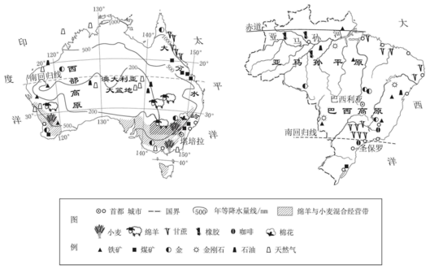
19. 澳大利亚和巴西发展经济的共性优势条件是（ ）
A. 四面临海多良港，利于对外贸易
B. 矿产资源丰富，工矿业基础雄厚
C. 全境水热丰沛，宜种植热带作物
D. 城市集中于高原，区域联系紧密
20. 关于两国甘蔗生产，下列说法正确的是（ ）
A. 澳大利亚以甘蔗和牧羊混合经营为特色
B. 澳大利亚的蔗糖出口主要依靠航空运输
C. 巴西应该砍伐雨林开辟更多甘蔗种植园
D. 巴西用甘蔗制造乙醇燃料利于环境保护
【答案】19. B 20. D
【解析】
【19题详解】
巴西东临大西洋，西部深入南美洲大陆内部，A错误；
都拥有丰富的铁、煤等矿产资源，采矿业发达，工矿业基础雄厚，B正确；
澳大利亚中西部广大地区气候干旱，沙漠广布，C错误；
城市和人口都主要集中分布在东南沿海地区，D错误。
【20题详解】
澳大利亚以绵羊与小麦混合经营为特色，A错误；
蔗糖属于大宗笨重货物，且澳大利亚四面临海，其蔗糖出口主要依靠海洋运输，运费较低，B错误；
亚马孙热带雨林具有巨大的环境效益，巴西大量砍伐雨林开辟甘蔗种植园会破坏生态环境，加剧全球气候变暖，C错误；
巴西利用甘蔗制造生物燃料乙醇，其碳排放量比汽油低90%，有利于减少温室气体排放，保护环境，D正确。
第二部分
21. 美丽中国——奇迹工程，绿色守望。2024年11月，世界第二大流动沙漠——我国的塔克拉玛干沙漠，实现了3046千米绿色阻沙防护带全面“锁边合龙”（下图1）。北京某校学生围绕这一堪称世界奇迹的“沙漠锁边”工程，开展了探究学习。阅读图文资料，回答下列问题。
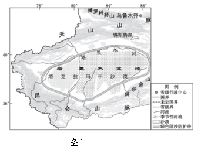
探究一：“锁边”之因
新疆维吾尔自治区是我国荒漠化土地面积最大的省区。图2为塔里木盆地气候资料，图3为我国“三区四带”生态功能区布局示意图。
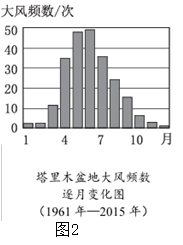
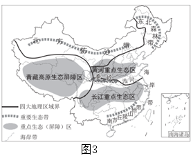
（1）新疆主要位于我国四大地理区域中的____地区，由于深居_____，_____难以到达，气候干旱。
（2）读图2，塔里木盆地1961年—2015年大风频数高于30次的月份是________月，每年该时段易发生沙尘暴，加剧了土地荒漠化。
（3）对照图3可知，“沙漠锁边”工程属于我国“三区四带”生态功能区建设中_____带的重要组成部分。在“三区四带”中，下列叙述正确的是____（单项选择）。
①长江重点生态区位于秦岭—淮河以南 ②青藏高原生态屏障区所处的纬度最高
③东北森林带使黄土高原减少水土流失 ④南方丘陵山地带易遭受暴雨洪涝危害
A．①③ B．①④ C．②③ D．②④
探究二：“锁边”之法
“沙漠锁边”工程，即在沙漠边缘绿洲之间的空白区域进行防沙治沙，将沙漠“锁进笼子”。图4是该工程局部地区的卫星影像和照片，显示了我国因地制宜治沙的多种方式。
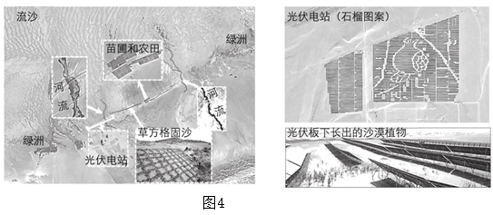
（4）请依据材料，将以下“治沙锦囊”卡片填写完整。
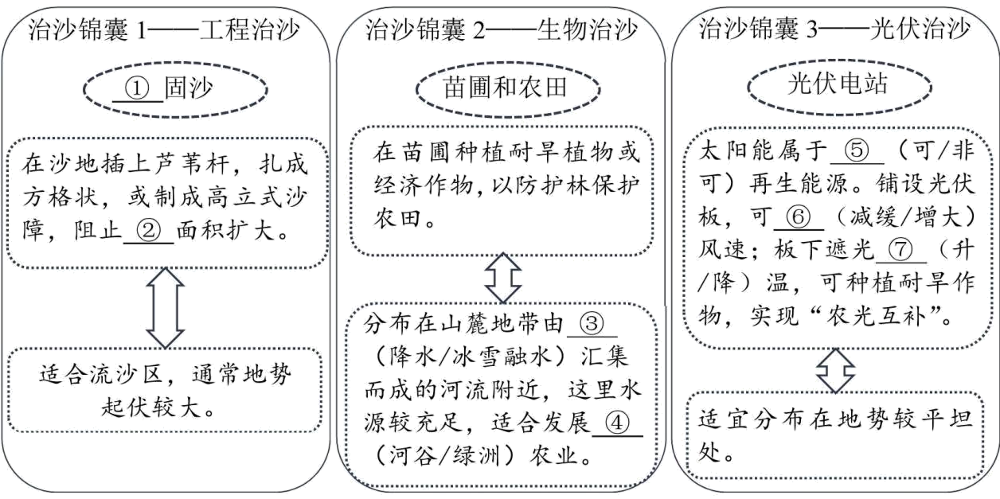
①________②________③________④________⑤________⑥________⑦________
沙漠里的光伏板被摆放成各种有趣的图案，体现了独属于中国建设者的浪漫。
（5）图4中光伏板被摆放成“石榴”的图案，象征着全国各民族团结如一家。下列能反映新疆地区少数民族风情的剪纸作品是_____（单项选择）。
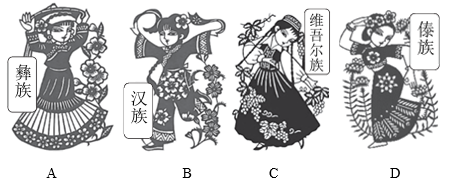
A. AB. BC. CD. D
探究三：“扩边”发展
2025年以来，塔克拉玛干沙漠从“锁边”治理迈入“扩边”发展新阶段，致力于将沙漠生态治理和发展沙漠产业相结合，以科技赋能高质量可持续发展。如于田县种植沙漠玫瑰，和田县发展海鲜养殖，喀什推出沙漠徒步、滑沙等旅游项目……
（6）从地理视角，谈一谈新疆“沙漠锁边”工程及“扩边”发展对你的启示。（要求：结合实例，至少说出两方面）
【答案】（1） ①.
西北 ②.
内陆 ③.
海洋水汽（或夏季风） （2）
4、5、6 （3） ①.
北方防沙 ②. B
（4） ①.
草方格 ②.
沙漠（或流沙） ③.
冰雪融水 ④.
绿洲 ⑤.
可 ⑥.
减缓 ⑦.
降 （5）C （6）
核心观点：区域发展应遵循因地制宜原则，实现生态环境保护与经济发展的协调统一。
生态保护方面：应因地制宜采取科学的生态治理措施。例如，新疆在流沙区采用草方格固沙，在水源较充足地区种植防护林，有效遏制了荒漠化，改善了生态环境。
经济发展方面：应依托区域特色资源，将生态治理与产业发展相结合。例如，新疆利用广阔的沙漠和丰富的太阳能发展光伏产业，并结合特色农业（如种植沙漠玫瑰）和旅游业（如沙漠徒步），实现了经济的高质量可持续发展。
【解析】
【小问1详解】
先依托我国四大地理分区基础知识点定位，新疆全境属于西北地区；再结合西北干旱成因逻辑推导，新疆深居亚欧大陆内部，远离海洋，来自海洋的湿润水汽难以抵达，大气降水稀少，最终形成干旱气候，依次对应三处填空。
【小问2详解】
本题考查地理统计图的判读能力。解题思路是直接观察图2“塔里木盆地大风频数逐月变化图”，找到纵坐标数值大于30的柱状图，向下对应横坐标的月份即可得出答案。易错点是看错纵坐标的刻度值。
【小问3详解】
先读图3“三区四带”分布图，塔克拉玛干沙漠位于我国西北，对应四大生态带里的北方防沙带；
长江重点生态区分布在长江流域，整体位于秦岭—淮河以南；
青藏高原生态屏障区纬度偏低，东北森林带纬度才是最高；
东北森林带主要涵养东北水源，黄土高原水土保持依靠黄河重点生态区，二者无关联；
南方丘陵山地带降水集中多暴雨，易发生洪涝、水土流失灾害。
【小问4详解】
①②空需观察图4中的“草方格固沙”景观并结合治沙目的作答；③④空需调动西北地区水源主要来自高山冰雪融水、农业以绿洲农业为主的已有知识；⑤⑥⑦空需理解光伏治沙的物理原理，即光伏板能增加地表粗糙度减小风速，遮挡阳光降低地表温度从而减少蒸发。
【小问5详解】
题干限定新疆少数民族，新疆主体少数民族为维吾尔族；四张剪纸分别标注彝族、汉族、维吾尔族、傣族，维吾尔族剪纸对应C选项，直接匹配地域与民族对应关系即可选出答案。
【小问6详解】
本题为开放性论述题，考查人地协调观。解题思路分为三步：首先，提炼核心观点，即“因地制宜”与“人地协调”；其次，回归材料，将设问分为“锁边（生态治理）”和“扩边（产业发展）”两个层次；最后，结合材料中的具体实例（如草方格、光伏治沙、沙漠玫瑰、沙漠旅游等）分别对两个层次进行分析。
22. 国际合作——成就彼此，照亮世界。2025年是中国和欧盟建交50周年，中欧班列——渝新欧国际铁路是中欧合作的靓丽名片。图1为渝新欧国际铁路及其沿途部分区域示意图。下表为渝新欧铁路起止点——我国重庆市和德国杜伊斯堡市的气候资料。根据图文资料，回答下列问题。
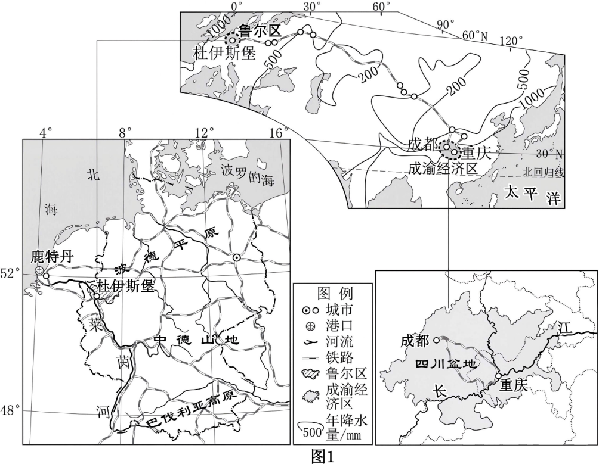
城市 | 比较类别 | 1月 | 4月 | 7月 | 10月 | 年降水量 |
重庆 | 气温（℃） | 5.6 | 19.1 | 28.5 | 16.2 |
|
降水（mm） | 20 | 102 | 171 | 96 | 1135 |
杜伊斯堡 | 气温（℃） | 2.5 | 9.5 | 18.0 | 10.5 |
|
降水（mm） | 70 | 55 | 85 | 70 | 850 |
（1）比较渝新欧铁路线起止点所在经济区的地理特征，完成表格。
项目 经济区 | 纬度位置 | 河流 | 地形区 | 交通条件 |
成渝经济区 | 30°N附近 | 长江，自西向东流，注入太平洋 | 四川盆地 | 分析共性特点： ⑤ |
德国鲁尔区 | ① （纬度）附近 | 莱茵河，②自 向 流，注入 ③ | ④ |
①________②________③________④________⑤________
渝新欧班列从重庆到杜伊斯堡，沿途植被依次出现森林—草原—荒漠—草原—森林。
（2）据图1分析，呈现上述景观是因为沿途降水变化规律为_____，其主要影响因素是_____（单项选择）。
A．纬度位置 B．海陆分布 C．地形 D．人类活动
（3）请据表将图2中杜伊斯堡的气温曲线和降水量柱状图补充绘制完整。_____
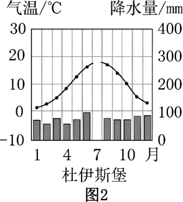
与重庆相比，杜伊斯堡的气候特征是气温年较差_____，降水季节变化_____。
（4）与杜伊斯堡所在气候区的景观相符合的图片是_____（单项选择）。
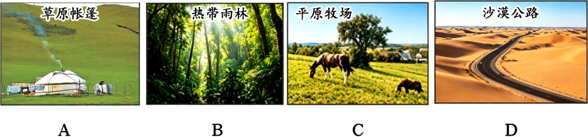
A. AB. BC. CD. D
至2024年底，渝新欧国际铁路的班列累计开行数量居全国中欧班列首位。
（5）渝新欧铁路的建设有利于_____（单项选择）。
①沿线国家进行经贸发展与合作 ②中国制造业产品出口欧洲
③扩大区域间经济发展水平差异 ④推动亚欧经济走廊的形成
A. ①②③B. ①②④C. ①③④D. ②③④
2025年4月，中德国际创新科技合作交流会在德国举办，两国共同探讨深化中德、中欧经贸合作新机遇。
（6）本次中德交流的新领域最可能聚焦于_____（单项选择）。
A. 钢铁、化工B. 传统汽车
C. 历史文化D. 新能源、数字经济
【答案】（1） ①. 52°N ②. 南、北 ③. 北海 ④. 波德平原 ⑤. 水陆交通便利
（2） ①. 先减少后增加（或多—少—多） ②. B
（3） ①. 绘图：在7月处，气温点标在18℃位置并与相邻月份平滑连线，降水柱状图画至85mm刻度线处。如图所示：
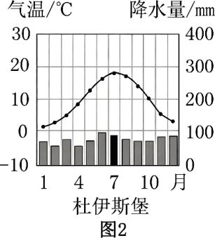
②. 小 ③. 小（或均匀）。 （4）C （5）B （6）D【解析】
【小问1详解】
观察图1中的德国局部图：鲁尔区靠近52°N纬线；莱茵河发源于南部山地，整体自南向北流淌，最终注入大西洋边缘海——北海；鲁尔区位于欧洲中部波德平原，地势平坦。成渝经济区：铁路、公路密集，长江内河航运发达；鲁尔区：铁路公路路网完善，莱茵河干支流内河航运发达；两地陆路+水运配套完善，总结共性为水陆交通便利。
【小问2详解】
从沿海到内陆再到沿海，距海远近发生变化，导致海洋水汽到达量呈现先减少后增加或“多—少—多”的变化，从而使植被呈现“林—草—沙—草—林”的更替。这属于典型的海陆位置（分布）对气候的影响，B正确。
【小问3详解】
绘图时需注意横坐标找准“7月”，纵坐标左侧看气温、右侧看降水，做到定点准确，如上图所示。
【小问4详解】
杜伊斯堡属于终年温和湿润的温带海洋性气候，适合多汁牧草生长，对应平原牧场景观，C正确。A为温带大陆性气候区的草原，B为热带雨林，D为热带或温带沙漠景观，均可排除。
【小问5详解】
中欧班列打通亚欧陆路通道，促进沿线贸易往来，①正确；
班列缩短中欧陆路运输时间，方便我国工业品销往欧洲，②正确；
铁路带动沿线欠发达地区发展，缩小区域差距，③错误；
稳定陆路通道串联亚欧，搭建经贸交流走廊，④正确。
【小问6详解】
钢铁、化工、传统汽车属于传统工业，历史文化不属于科技领域，ABC错误；
新能源与数字经济代表了当前全球高新技术产业的发展方向，高度契合“创新”主题，D正确。
23. 东非攻略——观动物迁徙，探赤道之巅旅游业是坦桑尼亚的支柱产业，全国1/3的国土为国家公园、动物和森林保护区。小明同学借助AI为家人制作了一份坦桑尼亚旅游攻略。请你根据下图非洲及坦桑尼亚地图，帮助小明同学进一步完善这份攻略。
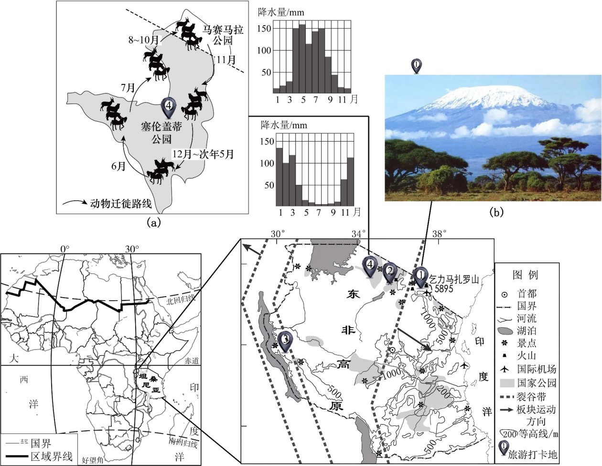
| 前期准备 衣物：坦桑尼亚虽然位于 ① 带（热量带），但因地处 ② （地形类型），气温较低，需准备保暖衣物。 其他物品： ③ 、常用药品等。 |
|
|
| 行程安排 第1天：国内——乘飞机至“旅游打卡地1”（乞力马扎罗山国家公园）。 第2天：前往“旅游打卡地2”，游览恩戈罗火山口。 这里位于东非大裂谷地带。裂谷形成的主要原因是板块的 ④ （挤压/张裂）运动。 第3-4天：途经“旅游打卡地3”，前往“旅游打卡地4”（塞伦盖蒂国家公园），一路寻找动物大迁徙的踪迹。 动物迁徙因时而异。如图（a）甲地气候图所示，塞伦盖蒂国家公园最适宜游客观赏动物迁徙的时间是⑤ ～ 月之间，此时天气晴好，且正值坦桑尼亚草原的 ⑥ 季。游客会看到角马等草食动物大规模结群向 ⑦ 方迁徙，原因是那里 ⑧ 。 第5-6天：返回“旅游打卡地1”，近距离感受“赤道雪山”的魅力。 如图（b）所示，乞力马扎罗山山顶终年积雪。其南坡是迎风坡，降水 ⑨ ，山上的冰川和雪景尤为壮观。 游客可参观山下的咖啡种植园。这里咖啡种植的优越自然条件是 ⑩ 。 |
|
①________②________③________④________⑤________⑥________⑦________⑧________⑨________⑩________
【答案】 ①. 热 ②. 高原 ③. 防晒用品、矿泉水等（任答一项，合理即可） ④. 张裂 ⑤. 5～10 ⑥. 干 ⑦. 北 ⑧. 正值湿季，水草丰美，食物充足（合理即可） ⑨. 较多 ⑩. 光照、热量、水源充足，土壤肥沃等（任答一项，合理即可）
【解析】
【详解】坦桑尼亚位于赤道附近、南北回归线之间，从热量带划分属于热带；根据等高线数值（多在1000米以上）及“东非高原”注记判断地形类型为高原；结合目的地“热带、高原、野生动物多”的环境特征，从防晒、防蚊、观景等实际需求出发作答，合理即可得分；东非大裂谷位于板块交界处，由板块发生张裂拉伸运动形成；图(a)甲地气候图，找出降水稀少的月份（5-10月）判定为干季；读动物迁徙路线图，干季时甲地水草枯黄，动物随降水带移动，向此时降水较多、水草丰美的北方（乙地）迁徙；迎风坡气流抬升，降水更丰富，因此南坡降水多，冰川积雪更充足，景观更壮观；咖啡是热带作物，喜热、忌涝，坦桑尼亚地处热带，热量充足，高原地形坡度适宜，排水条件好，加上土壤肥沃，适合咖啡生长。